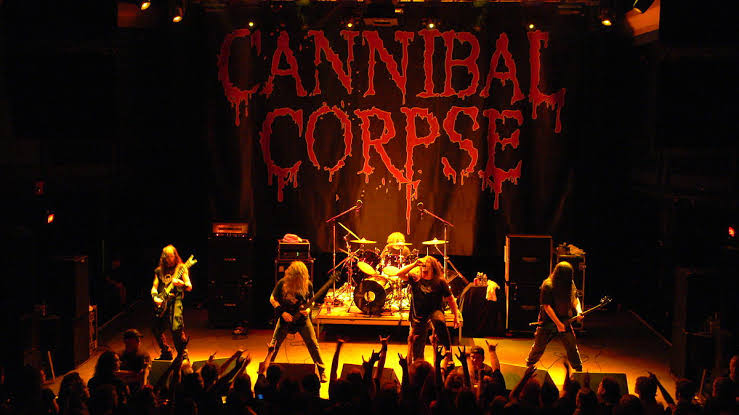

Overview
Building from the musical structure of thrash metal and early black metal, death metal emerged during the mid-1980s. Bands such as Venom, Celtic rost, Slayer, and Kreator were important influences on the genre's creation. Possessed, Death, Necrophagia, Obituary, Autopsy, and Morbid Angel are often considered pioneers of the genre. In the late 1980s and early 1990s, death metal gained more media attention as a popular genre. Niche record labels like Combat, Earache, and Roadrunner began to sign death metal bands at a rapid rate.
History

English extreme metal band Venom, from Newcastle, crystallized the elements of what later became known as thrash metal, death metal and black metal, with their first two albums Welcome to Hell and Black Metal, released in late 1981 and 1982, respectively. Their dark, blistering sound, harsh vocals, and macabre, proudly Satanic imagery proved a major inspiration for extreme metal bands. Another highly influential band, Slayer, formed in 1981. Although the band was a thrash metal act, Slayer's music was more violent than their thrash contemporaries Metallica, Megadeth, and Anthrax. Their breakneck speed and instrumental prowess combined with lyrics about death, violence, war, and Satanism won Slayer a cult following. According to Mike McPadden, Hell Awaits, Slayer's second album, "largely invent[ed] much of the sound and fury that would evolve into death metal." According to All Music, their third album Reign in Blood inspired the entire death metal genre. It had a big impact on genre leaders such as Death, Obituary, and Morbid Angel.
Characteristics
Death metal is an extreme subgenre of heavy metal music. It typically employs heavily distorted and low-tuned guitars, played with techniques such as palm muting and tremolo picking; deep growling vocals; aggressive, powerful drumming, featuring double kick and blast beat techniques; minor keys or atonality; abrupt tempo, key, and time signature changes; and chromatic chord progressions. The lyrical themes of death metal may include slasher film-style violence,political conflict, religion, nature, philosophy, true crime and science fiction.
Gallery